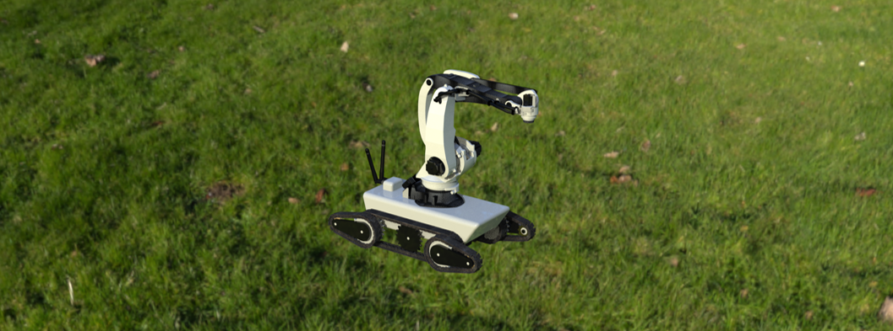
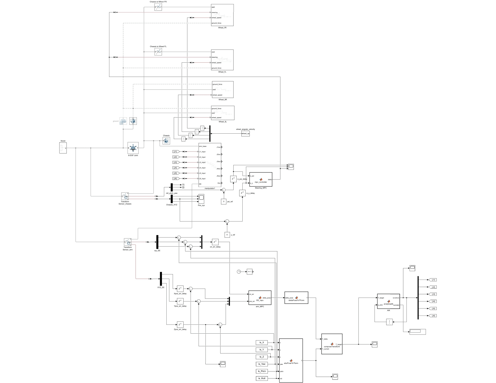
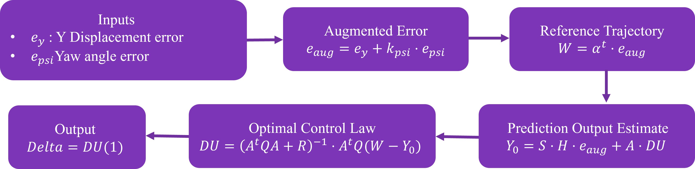
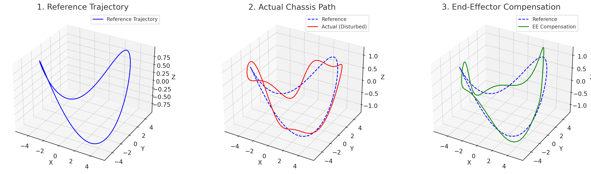
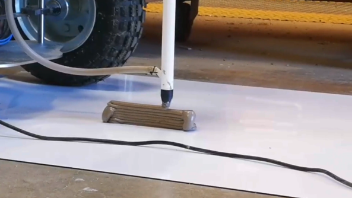

How We Kept a Robot Arm Steady on Bumpy Terrain
Shuangshan Li
Why we need this
Imagine you're controlling a robot with a camera on a mountain path. If the camera shakes as the robot moves, it’s nearly impossible to get clear video.
That’s why we developed a system to keep the robot arm stable even on uneven ground — like a virtual “gimbal” that thinks ahead and adjusts itself.

Figure 1: Operational scenario diagram: field mobile robot
Objectives
The objective of this project is to develop an active End-Effector Stabilization system for robotic arms on mobile platforms operating in uneven mountainous terrain, enabling the capturing and recording of high-quality video footage.
Our system has 3 goals:
- Predict terrain movement: Understand how the robot will shake or tilt using simulation.
- Keep the tool stable: Use smart control to adjust the robot arm in real time.
- Test everything safely: First in a virtual environment, then on real hardware.
Proposed Approach
Our approach combines digital simulation with smart control algorithms to keep robot arms steady on rough terrain.
Step 1: Building a Digital Twin
We built a digital model of a robot driving over bumpy ground using MATLAB and Simscape. This "digital twin" lets us test different scenarios safely without risking real hardware.
Step 2: Smart Prediction and Control
We used Model Predictive Control (MPC) to "predict the future" - the system looks ahead to anticipate shaking and adjusts the robot arm before it gets disturbed. We also compared it with LQR (Linear Quadratic Regulator), a simpler but faster control method, to see which works better.
Step 3: Testing with Simulated Terrain
In the simulation, we added "fake bumps" and realistic terrain disturbances to test how well the system reacts under different conditions.

Figure 2: Complete Simulink model showing the integration of terrain simulation, vehicle dynamics, manipulator control, and MPC algorithms
Computational Methods
How the Control System Works
The control system works by predicting what will happen in the next few seconds, then choosing the best set of movements to stay stable.
Here's the simplified idea:
- If the robot sees a bump ahead, it calculates how to tilt the arm to cancel it.
- It does this again and again, very quickly — like a chess player thinking a few moves ahead.
- The system balances two goals: staying on target vs. using smooth, energy-efficient movements.
The Math Behind It
We use Model Predictive Control (MPC) - a mathematical framework that solves an optimization problem every few milliseconds. Think of it as constantly solving a puzzle: "Given where I am now and where I want to be, what's the best way to get there?"

Figure 4: MPC Control Algorithm Flowchart - from sensing errors to generating optimal control commands
How the algorithm works step by step:
- Inputs: The system measures two key errors - how far the robot is from its intended path (Y displacement) and how much its heading is off (Yaw angle)
- Augmented Error: These errors are combined into a single, weighted error value that considers both position and orientation
- Reference Trajectory: The system predicts where the robot should be in the next few time steps
- Optimization: It calculates the best control moves to minimize future errors while keeping movements smooth
- Output: The first control command is applied, and the whole process repeats
Click to see the detailed mathematical formulation
Some Basic Math of Model Predictive Control Framework for Multi-DOF and SISO Systems
1. Augmented error:
(A) Manipulator: $\mathbf{e} = \mathbf{e}_{\text{pose}} \circ \mathbf{g}$, where $\mathbf{g} = [1, 1, 1, 2, 2, 2]^T$
(B) Vehicle: $e_{\text{aug}} = e_y + k_\psi \cdot e_\psi$
2. Reference trajectory:
$$W = \begin{bmatrix} \alpha^1 \\ \alpha^2 \\ \vdots \\ \alpha^P \end{bmatrix} \cdot e, \quad \text{where } e = \begin{cases} e_k & \text{(per DOF, A)} \\ e_{\text{aug}} & \text{(B)} \end{cases}$$
3. Predicted output:
$$Y_0 = S \cdot (H \cdot e) + A \cdot \Delta U, \quad \text{where } A = \begin{cases} A_k & \text{(A)} \\ A & \text{(B)} \end{cases}$$
4. Optimization objective:
$$\min_{\Delta U} \quad \left\| A \cdot \Delta U + Y_0 - W \right\|_Q^2 + \left\| \Delta U \right\|_R^2$$
5. Closed-form solution:
$$\Delta U = \left( A^T Q A + R \right)^{-1} A^T Q (W - Y_0)$$
6. Control output:
$$u = \Delta U_1, \quad \text{where } u = \begin{cases} \Delta x_k & \text{(A, per DOF)} \\ \delta & \text{(B)} \end{cases}$$
Variable Definitions
| e_y: Lateral error (m) |
e_ψ: Yaw error (rad) |
k_ψ: Heading scaling (m/rad) |
| e_k: Error in DOF k (m or rad) |
g: DOF-specific gain vector |
e: Weighted pose/orientation error |
| α: Decay rate |
W: Reference trajectory |
Y₀: Predicted output |
| A, A_k: Step-response matrix |
H: Error correction vector |
S: Shift matrix |
| Q, R: Weighting matrices |
ΔU: Control increments |
P, M: Prediction / control horizon |
| δ: Steering output (rad) |
Δx: EE pose correction (6-DOF) |
Δx_k: DOF-wise EE increment |
Why This Approach Works
Traditional control methods react after the disturbance happens. Our MPC approach is like having a crystal ball - it predicts the disturbance and prepares the countermeasure in advance. This makes the robot much more stable and responsive.
Experimental Results
Virtual Testing
We tested the system on a virtual terrain 20 meters long, full of bumps and slopes. We even pushed the robot sideways with a fake force!

Figure 5: 3D Simulation Environment - Robot navigating through challenging terrain with different elevation levels and slopes
The simulation environment recreates real-world challenges: uneven surfaces, slopes, and unexpected disturbances. As you can see in the image above, the robot must navigate through various terrain features that would normally cause significant shaking and instability.
The robot's arm reacted and corrected itself — after 4 seconds, it was already back on 80.5% of its planned path. (This means it had recovered most of its stability and was closely following the intended route again.)
What the Data Shows

Figure 6: Visualizing Control Logic - Reference, Disturbance, and Compensation
To understand how our control system works, we created a set of 3D visualizations showing three key aspects of the robot's motion:
- Reference Trajectory (Left): This is the ideal path the robot is supposed to follow, defined by target positions in 3D space (X, Y, Z). It represents a smooth and stable curve over flat terrain.
- Actual Path with Disturbance (Middle): In reality, the robot moves over uneven ground, causing the chassis to shake and drift away from the reference path. This results in errors in both position and orientation, shown here as deviations from the ideal trajectory.
- End-Effector Compensation (Right): To counteract this disturbance, the robotic arm actively adjusts its joints. The end-effector (tool tip) moves in the opposite direction of the disturbance to cancel out the chassis's motion. This way, it stays aligned with the original target, even as the base moves.
Together, these plots demonstrate how the system "feels" the disturbance and "reacts" in real-time to stay on course.
Real-World Testing
We also tested the algorithm on a real mobile robot equipped with both a chassis and a manipulator. The system successfully demonstrated its capability to traverse terrain, maintain stability, and even perform complex tasks like additive construction (3D printing while moving).

Figure 7a: Real-world implementation showing the mobile robot performing precise material extrusion
Figure 7b: Close-up view of the stabilized end-effector maintaining consistent layer deposition

Figure 7c: Demonstrating precise control even during mobile construction operations
The results speak for themselves: despite the chassis moving over surfaces, the robotic arm maintained precision, producing smooth and consistent material layers. This proves our control system works not just in simulation, but in the unpredictable real world.
Conclusions & What's Next
What We've Achieved
We've shown that our system works — in both simulation and real-world tests. The robot can keep its arm steady even when driving over rough, unpredictable ground.
Future Improvements
Next, we plan to add a depth camera to help "see" the bumps better, and improve the controller using nonlinear methods (NMPC). This will make the system even more responsive and precise.
Real-World Impact
This could help robots build houses, patrol forests, or assist in rescue missions — even on rough, unpredictable terrain. Imagine robots that can work anywhere, anytime, without being limited by smooth surfaces.